Setting Up the App
An SSL VPN profile has the same fields on iPhone and Android. This page goes through them in the order the profile editor shows them.
The fields, defaults, footers and messages were read from the source code of both apps, and the screenshots were taken from them with example profiles. What each setting did against a real server is in Test results.
Add a profile
Tap + on the home screen, tap Protocol and choose SSL VPN. Fill in the fields below and tap Save. Save names the first field that is still missing instead of saving an incomplete profile: Enter the server address., Enter the username., Enter the password. or Import a client certificate. Description, under Protocol, is optional: the profile's name on the home screen, which otherwise shows the server's name or address.
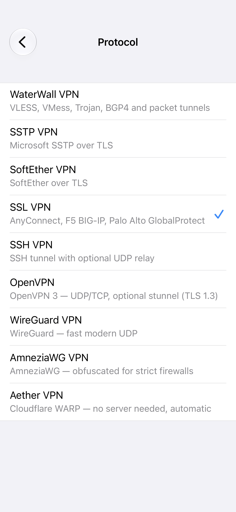
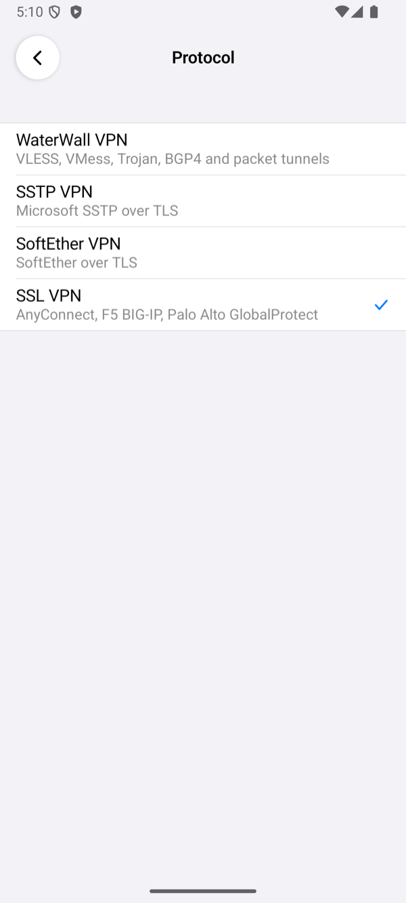
Server
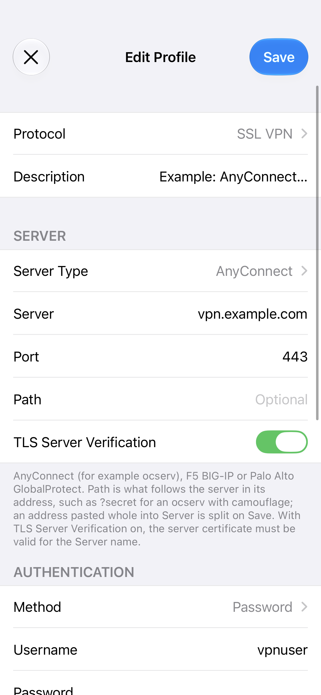
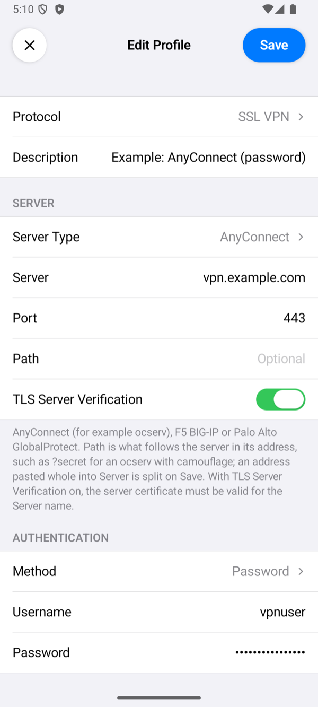
| Field | What to enter |
|---|---|
| Server Type | AnyConnect (default) for a Cisco AnyConnect server or ocserv, F5 BIG-IP, or Palo Alto GP for GlobalProtect. It must match the server: a server that speaks another protocol is refused with The server did not answer as … server. We tested AnyConnect only; see Server types. |
| Server | The server's DNS name, for example vpn.example.com, or its IP address. An address pasted whole, such as https://vpn.example.com:8443/?secret, is split on Save: the port goes to Port and the rest to Path. |
| Port | Empty means 443, ocserv's default. Any port that reaches the server's TLS port works; our tests also used 8443, which the server forwarded to 443. |
| Path | Empty for most servers. What follows the server in its address: for an ocserv with camouflage, a question mark and the server's secret, for example ?secret (see Configuration Reference). The connection log shows only the secret's length. |
| TLS Server Verification | On by default: the app accepts only a certificate that the phone trusts and that is valid for Server. Off skips that check. See the certificate warning. |
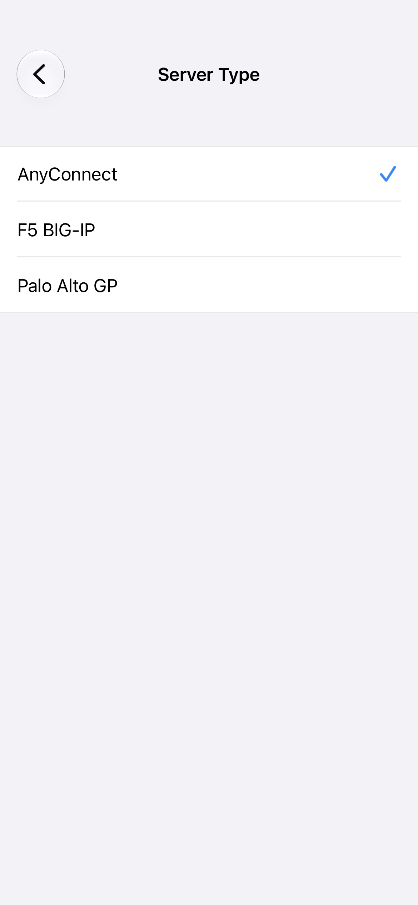
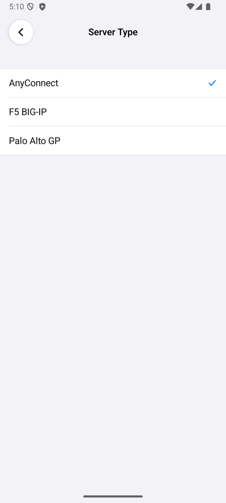
Authentication

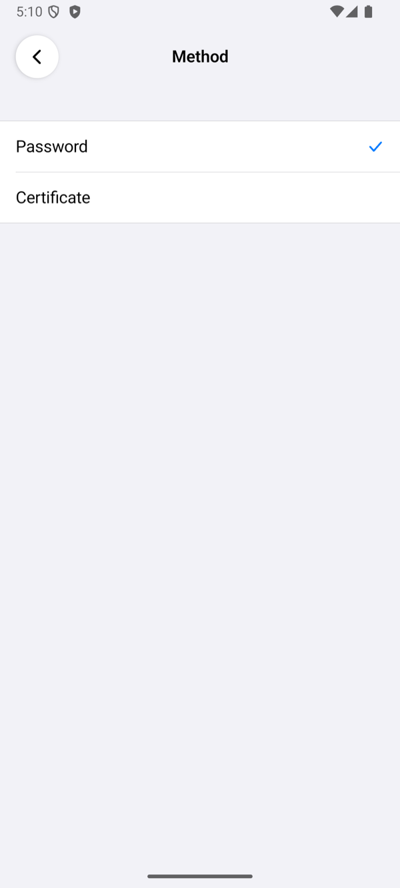
| Method | What it does |
|---|---|
| Password | Default. The app answers the server's login form with Username and Password, inside the TLS connection. A refused password is not sent again. |
| Certificate | Logs in with a client certificate; see Certificate login. |
Certificate login
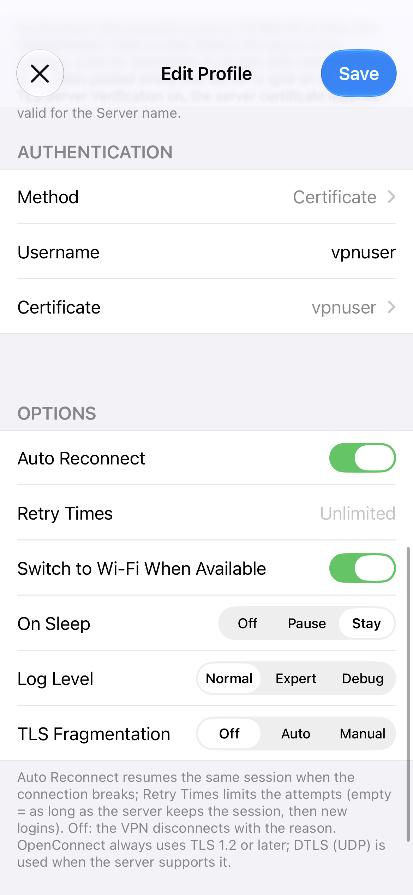
With Method set to Certificate, tap Certificate, then Import, and choose a .p12 or .pfx file that holds the client certificate and its private key. The app asks for the file's passphrase and keeps the certificate in the iPhone's Keychain or, on Android, encrypted with a key in the Android Keystore. The app presents the certificate in the TLS handshake. ocserv takes the user from the certificate, so Username does not change who logs in (ocserv makes such a certificate).
Options
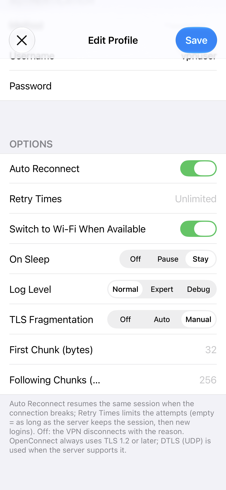
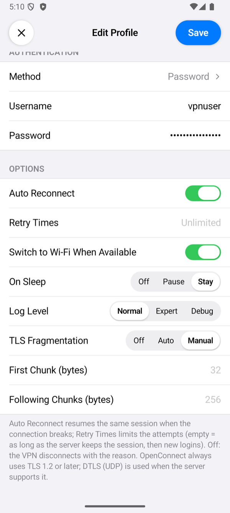
| Option | What it does |
|---|---|
| Auto Reconnect, Retry Times | Auto Reconnect (on by default): when the connection breaks, the app resumes the same session with its cookie, at once and then after waits of 2, 4, 6 … seconds; when the server ends the session, it logs in again. Retry Times limits the attempts; empty means as long as the server keeps the session, and then new logins. A login the server refused is never retried. Before the first connection, Retry Times also repeats a failed login. Without Auto Reconnect, a broken connection ends the VPN with Connection lost (auto reconnect is off). |
| Switch to Wi-Fi When Available | On by default: when Wi-Fi appears while the VPN is up, the app moves the session to it, without a new login. |
| On Sleep | Stay (default) keeps the connection while the device sleeps. Pause closes it and connects again on wake. Off closes it; on wake it connects again only with Auto Reconnect, otherwise the VPN ends with The connection was closed while the device slept. |
| Log Level | How much the connection log shows. Normal: the milestones, such as connecting, the session and the network settings, and OpenConnect's errors. Expert adds OpenConnect's progress lines and the routes the server sent. Debug adds the server's headers. The values of the server's cookies show as <elided>, and no level writes the password or TLS secrets. Tap the status under the power button to open the log. When the app gives up on a connection, a line starting with OpenConnect: closing with reason: names the reason. |
| TLS Fragmentation | Splits the outgoing bytes of the TLS handshake into small TCP writes; the TLS data itself is unchanged. Auto sends the first 43 bytes on their own, so that the server name lands in a later write, then 256 bytes per write (128 on cellular) a few milliseconds apart. Manual takes First Chunk (default 32 bytes) and Following Chunks (default 256 bytes). |
An SSL VPN profile has no proxy setting: the app always connects to the server directly.
The certificate warning
With TLS Server Verification on, the app checks the server's certificate before it connects: it must chain to a root the phone trusts and be valid for Server. When it is not, the app shows DANGEROUS! with each certificate of the chain and what is wrong with it.
- Continue connects this once without checking the certificate.
- Save and Continue turns TLS Server Verification off in the profile and connects.
- Cancel does not connect.
Connecting to a server's IP address instead of its name brings this warning, because the certificate names the server, not its address. Use the name.
Connect and check
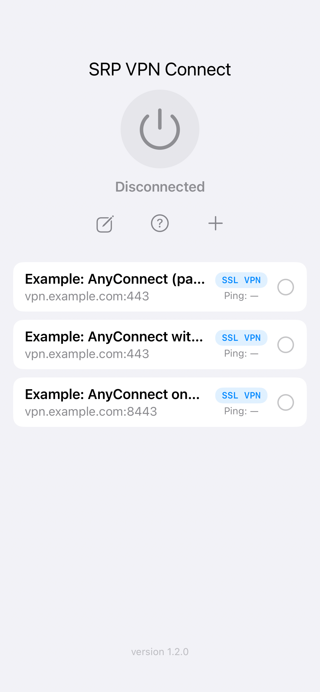
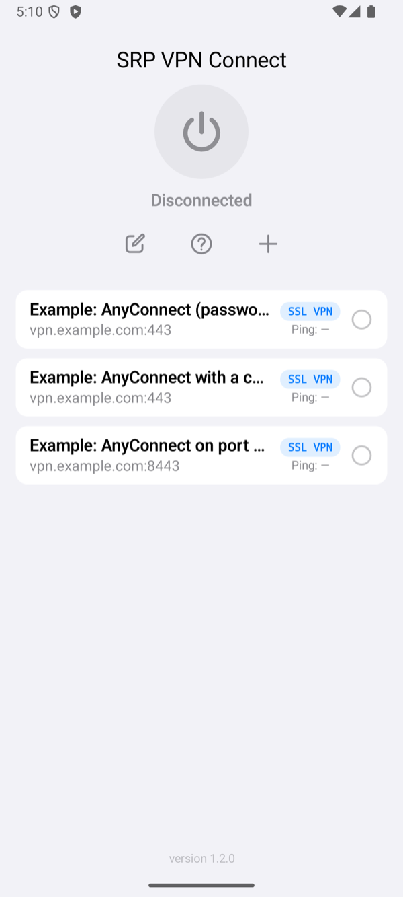
Select the profile on the home screen and tap the power button. The status changes to Connected once the server has given the phone its address. The row of the profile then shows the time of one request through the tunnel. If it fails, the app shows Connection Failed with a reason; Troubleshooting explains each one.